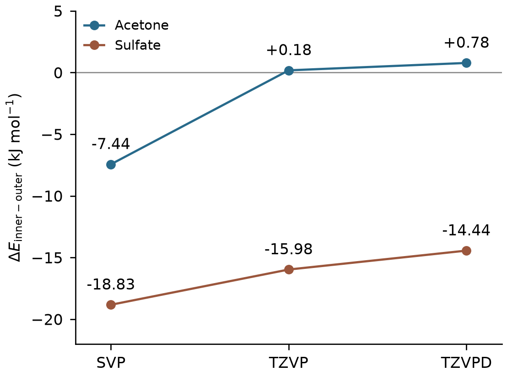
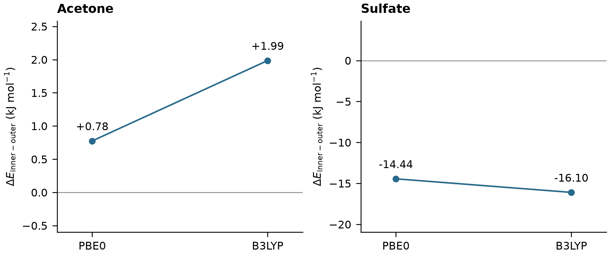

Ni coordination: cluster DFT
Hydrated Ni, acetone and sulfate coordination: geometry optimisation, basis-set checks and a second-functional comparison.


Result scope
The acetone inner-coordination energy advantage changes sign at larger basis sets. Sulfate retains a lower inner-structure electronic energy for these chosen clusters. Twelve-water extensions failed geometry acceptance; solution equilibrium and thermal free energies are not established.